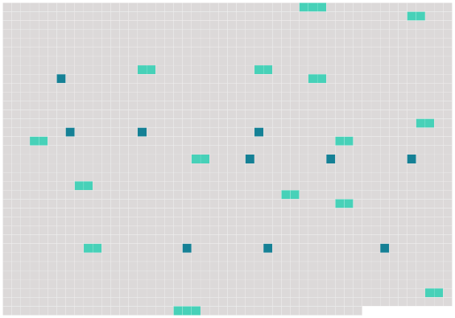

Longueur nb maillons : 25 mentions |
 |
Si quelques-uns des faits allégués par l'époux demandeur, donnent lieu à une poursuite criminelle de la part du ministère public, l'action en divorce restera suspendue jusqu'après le jugement [du tribunal criminel] ; alors elle pourra être reprise, sans qu'il soit permis d'inférer du jugement criminel aucune fin de non-recevoir ou exception préjudicielle contre l'époux demandeur. [1 phrases]
Toute demande en divorce détaillera les faits : elle sera remise, avec les pièces à l'appui, s'il y en a, au président [du tribunal] ou au juge qui en fera les fonctions, par l'époux demandeur en personne, à moins qu'il n'en soit empêché par maladie ; auquel cas, sur sa réquisition et le certificat de deux docteurs en médecine ou en chirurgie, ou de deux officiers de santé, le magistrat se transportera au domicile du demandeur pour y recevoir sa demande. [6 phrases]
Au jour indiqué, le juge fera aux deux époux, s'ils se présentent, ou au demandeur, s'il est seul comparant, les représentations qu'il croira propres à opérer un rapprochement : s'il ne peut y parvenir, il en dressera procès-verbal, et ordonnera la communication de la demande et des pièces au commissaire du Gouvernement, et le référé du tout [au tribunal] [1 phrases] Dans les trois jours qui suivront, [le tribunal] sur le rapport du président ou du juge qui en aura fait les fonctions, et sur les conclusions du commissaire du Gouvernement, accordera ou [suspendra] la permission de citer. [2 phrases]
Le demandeur, en vertu de la permission [du tribunal] , fera citer le défendeur, dans la forme ordinaire, comparaître en personne à l'audience à huis clos dans le délai de la loi ; il fera donner copie, en tête de la citation, de la demande en divorce et des pièces produites à l'appui. [9 phrases] [Le tribunal] renverra les parties à l'audience publique, dont [il] fixera le jour et l'heure ; [il] ordonnera la communication de la procédure au commissaire du Gouvernement, et [commettra] un rapporteur.
Dans le cas où le défendeur n'aurait pas comparu, le demandeur sera tenu de lui faire signifier l'ordonnance [du tribunal] , dans le délai qu'elle aura déterminé. [1 phrases] Au jour et à l'heure indiqués, sur le rapport du juge commis, le commissaire du Gouvernement entendu [le tribunal] statuera d'abord sur les fins de non-recevoir, s'il en a été proposé. [2 phrases] Immédiatement après l'admission de la demande en divorce, sur le rapport du juge commis, le commissaire du Gouvernement entendu, [le tribunal] statuera au fond.
[Il] fera droit à la demande, si elle [lui] paraît en état d'être jugée ; sinon [il] admettra le demandeur à la preuve des faits pertinens par lui allégués, et le défendeur à la preuve contraire. [3 phrases] Aussitôt après la prononciation du jugement qui ordonnera les enquêtes, le greffier [du tribunal] donnera lecture de la partie du procès-verbal qui contient la nomination déjà faite des témoins que les parties se proposent de faire entendre. [3 phrases]
[Le tribunal] statuera sur ces reproches, après avoir entendu le commissaire du Gouvernement. [1 phrases]
Les parens des parties, à l'exception de leurs enfans et descendans, ne sont pas reprochables du chef de la parenté, non plus que les domestiques des époux, en raison de cette qualité mais [le tribunal] aura tel égard que de raison aux dépositions des parens et des domestiques. [10 phrases] Après la clôture des deux enquêtes ou de celle du demandeur, si le défendeur n'a pas produit de témoins, [le tribunal] renverra les parties à l'audience publique, dont [il] indiquera, le jour et l'heure ; [il] ordonnera la communication de la procédure au commissaire du Gouvernement, et [commettra] un rapporteur. [9 phrases]
Après une année d'épreuve, si les parties ne se sont pas réunies, l'époux demandeur pourra faire citer l'autre époux à comparaître [au tribunal] , dans les délais de la loi, pour y entendre prononcer le jugement définitif, qui pour lors admettra le divorce. [1 phrases]
Lorsque le divorce sera demandé par la raison qu'un des époux est condamné à une peine infamante, les seules formalités à observer consisteront à présenter au tribunal civil une expédition en bonne forme du jugement de conr damnation, avec un certificat [du tribunal criminel] , portant que ce même jugement n'est plus susceptible d'être réformé par aucune voie légale. |
 |
La ressource peut être téléchargée sur la page Ortolang
Si vous avez des questions ou vous voyez des erreurs, merci d'envoyer un mail à silvia.federzoni89@gmail.com
Site développé par S. Federzoni (contact)